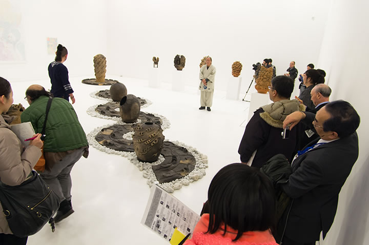
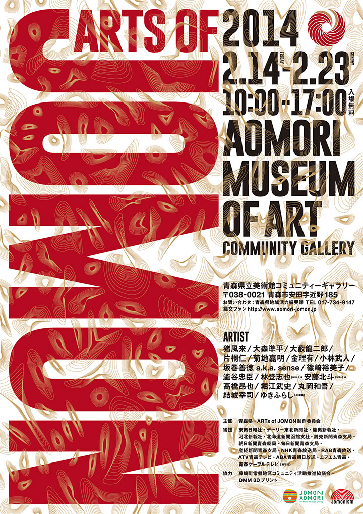

― これまでのイベント（記録） ―

|

|

|
|  |
青森県立美術館で開催される『ARTs of JOMON』展は、猪風来をはじめとする現代の縄文アーティスト
が結集！
大作『縄文山河』『ウフィカムイ(火神)』や『土夢華シリーズ』、そして『縄文スパイラル文様画』など
猪風来の代表作が３展示室のうち「縄文ルネサンス」室の空間を埋め尽くします。
様々な縄文アーティストたちの多彩な展示や、ワークショップなども開催され、大きな反響を呼びました。
=∴=∵=∴=∵=∴=∵=∴=∵=∴=∵=∴=∵=∴=∵=∴=∵=∴=∵=∴=∵=∴=∵=∴=∵=∴=∵=∴=
縄文文化にインスピレーションを受けたアート作品が青森に凱旋！
ニューヨーク・hpgrpギャラリー、フランス・Japan Expoと、現代アートを切り口に縄文文化の魅力を世界に
発信した“ARTs of JOMON”が青森にやって来ます！
今回の展示会では、タレント・片桐仁氏と本県のタイアップにより制作された「縄文三部作」を始めとする
作品のほか、全長８メートルという圧倒的な迫力を持つ猪風来氏の「縄文山河」などの新たな作品を加え、
“ARTs of JOMON”の集大成となる展示を行います。
気鋭のアーティストたちが造形物・絵画・CGといったさまざまな手法で表現する現代縄文アートをぜひ
お楽しみください！
|  |
 |
| 【ARTs of JOMON チラシ】 →PDF版を開く |